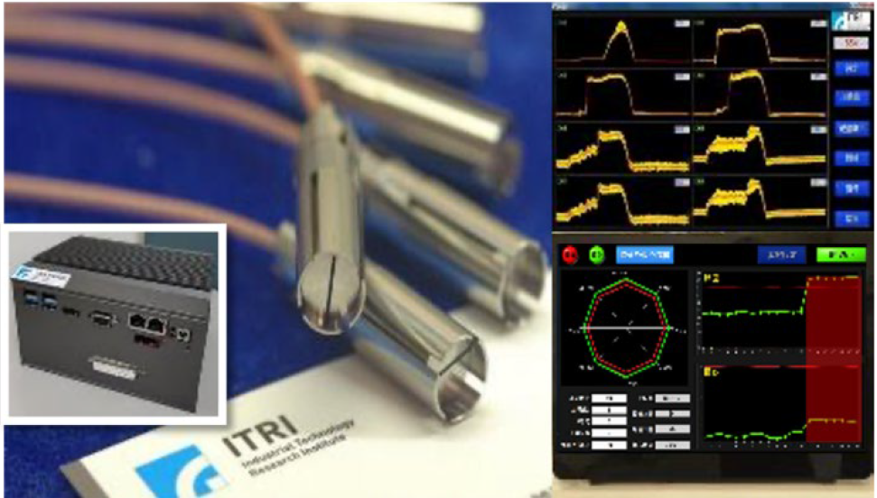

| 鍛造設備線上成型力監測方案 The on-line forming force monitoring solution for forging equipment |
| 壓電式動態力感測器直接量測機台衝擊力及應變量，工業標準 之元件尺寸(Φ8mm)，易於加裝至工業機台模穴內。具專利性 之雙端固定設計，可將感測器牢靠地固定於牆面或機器設備等 各種環境中，當該裝置將感測器固定於沖壓設備的孔洞中時， 衝擊力不會對感測器造成應力集中現象，進而提升感測器的可 靠度。以延長釋放電荷時間之讀取電路補償壓電感測元件輸出 失真，忠實反應輸入力量動態行為，並透過軟體統計分析，即 時診斷機台健康以及製程品質監控。 The Piezo type Dynamic Force Sensors directly measure force and strain from the machine part. The sensor size is Φ8mm which can be easily installed in the industrial standard bore. The apparatus with double anchors secure a sensor in a variety of environments such as walls or machines. When the apparatus with double anchors fixes a sensor in the hole of the stamping machine, the impact force does not cause stress concentration to improve the reliability of the sensor. The design of the readout circuit extends the discharge time, which leads to the real force dynamic behavior. The machine health monitor and process control is determined by the real- time data statistics and analysis.  |
| 技術洽詢聯絡人：陳國彰 經理 聯絡電話：06-3847136 E-mail：kerwin_c@itri.org.tw |